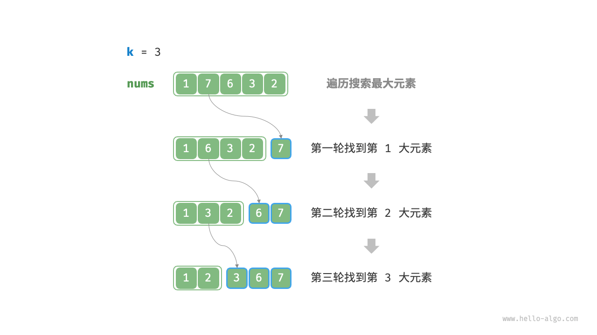
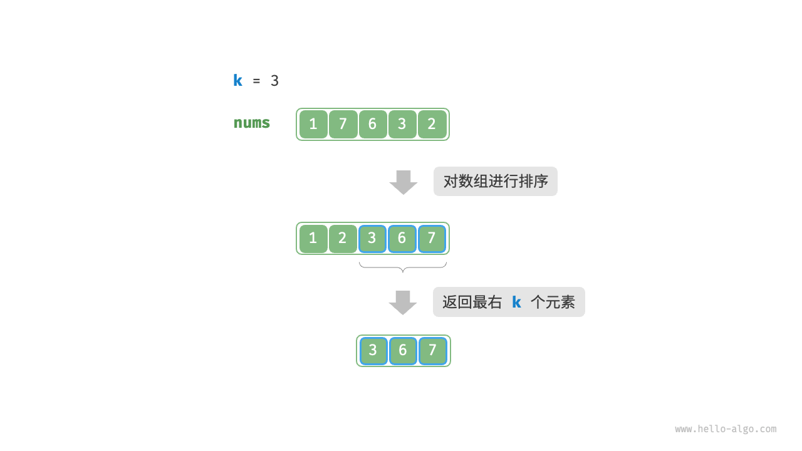
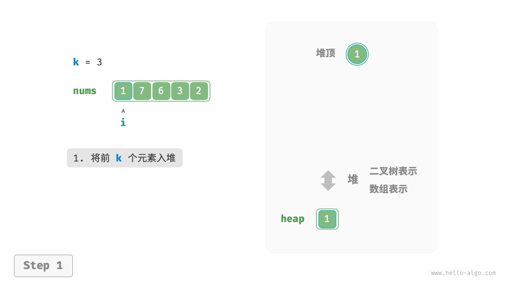
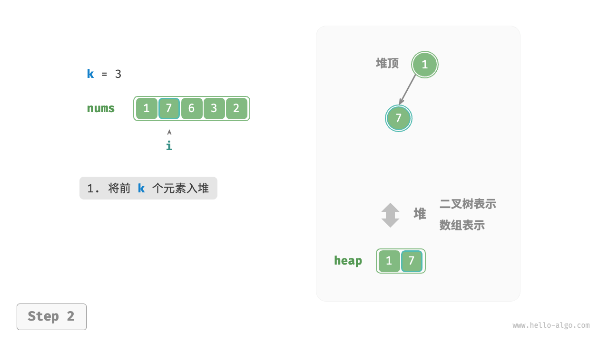
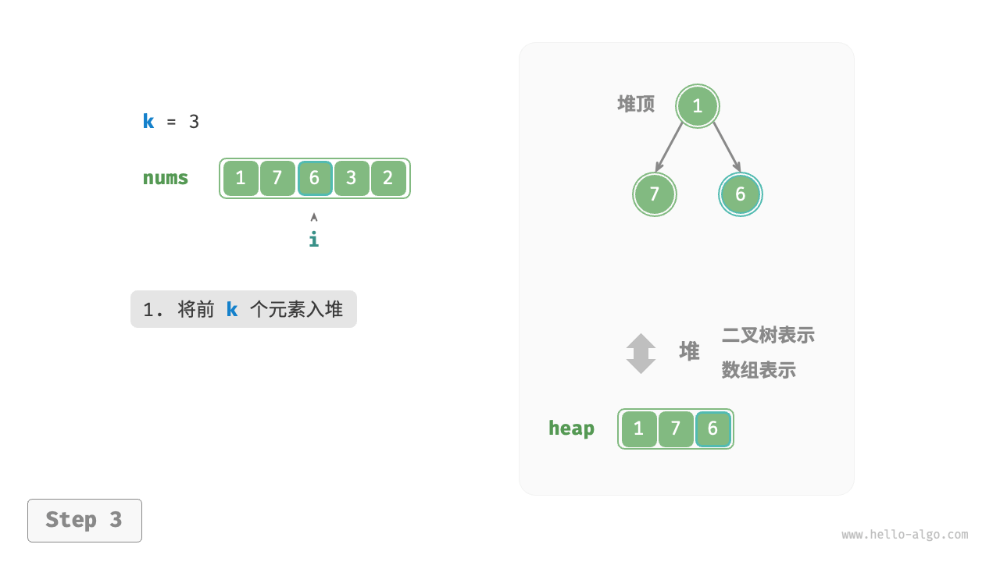
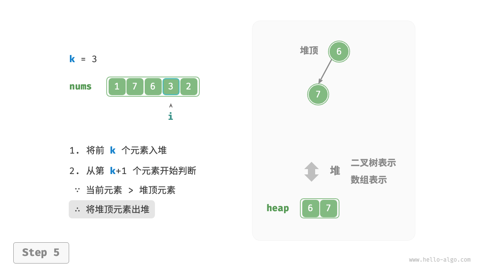
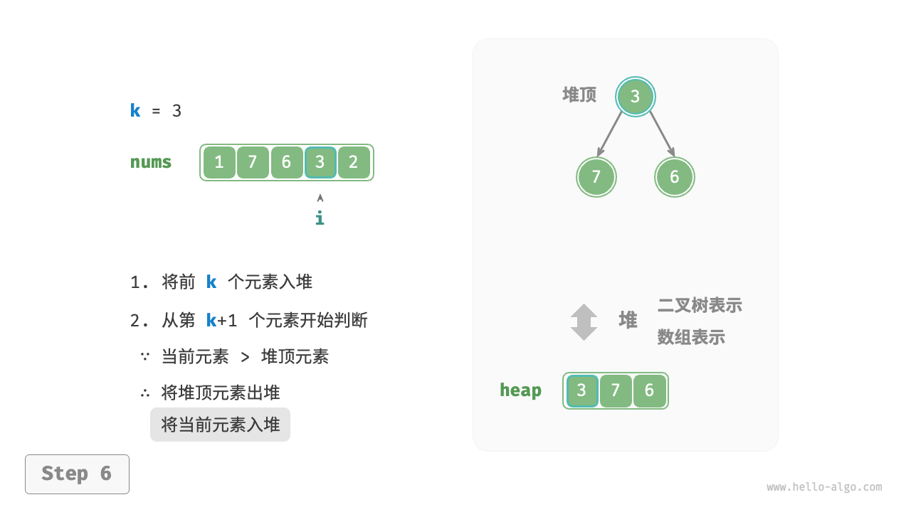
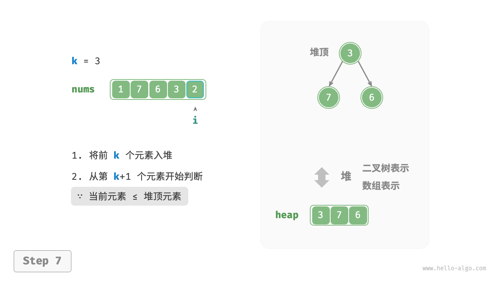
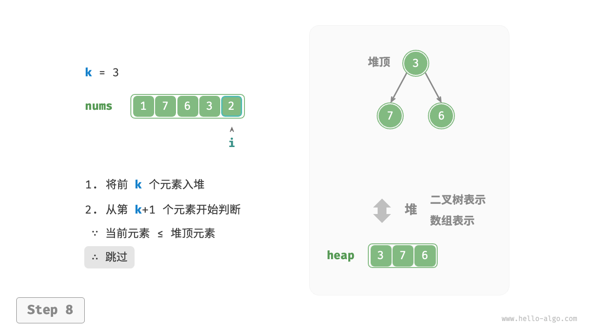
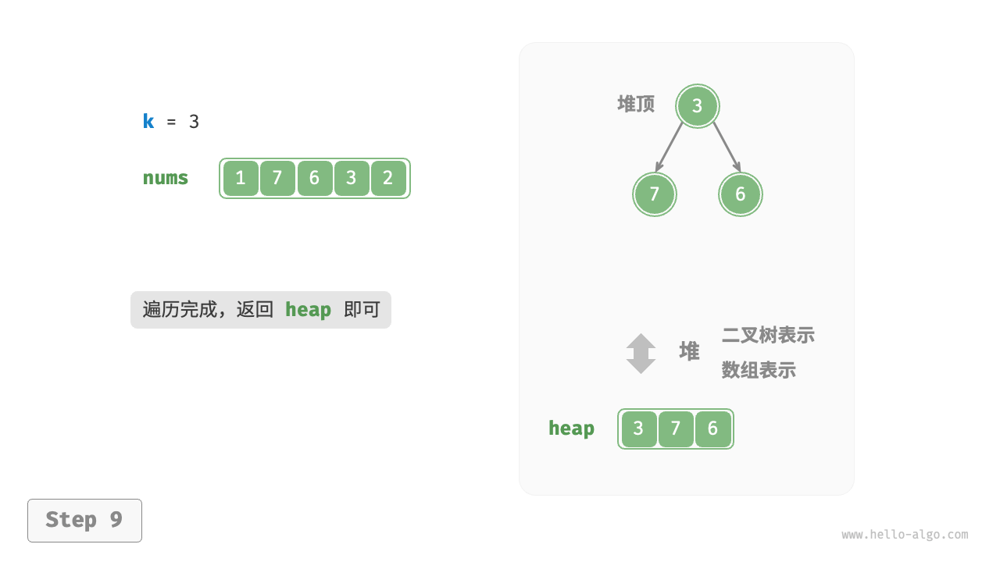

Top-k 问题
!!! question
给定一个长度为 $n$ 的无序数组 `nums` ，请返回数组中最大的 $k$ 个元素。
对于该问题，我们先介绍两种思路比较直接的解法，再介绍效率更高的堆解法。
方法一：遍历选择
我们可以进行下图所示的 $k$ 轮遍历，分别在每轮中提取第 $1$、$2$、$\dots$、$k$ 大的元素，时间复杂度为 $O(nk)$ 。
此方法只适用于 $k \ll n$ 的情况，因为当 $k$ 与 $n$ 比较接近时，其时间复杂度趋向于 $O(n^2)$ ，非常耗时。

!!! tip
当 $k = n$ 时，我们可以得到完整的有序序列，此时等价于“选择排序”算法。
方法二：排序
如下图所示，我们可以先对数组 nums 进行排序，再返回最右边的 $k$ 个元素，时间复杂度为 $O(n \log n)$ 。
显然，该方法“超额”完成任务了，因为我们只需找出最大的 $k$ 个元素即可，而不需要排序其他元素。

方法三：堆
我们可以基于堆更加高效地解决 Top-k 问题，流程如下图所示。
- 初始化一个小顶堆，其堆顶元素最小。
- 先将数组的前 $k$ 个元素依次入堆。
- 从第 $k + 1$ 个元素开始，若当前元素大于堆顶元素，则将堆顶元素出堆，并将当前元素入堆。
遍历完成后，堆中保存的就是最大的 $k$ 个元素。
"<1>" 
"<2>" 
"<3>" 
"<4>"
"<5>" 
"<6>" 
"<7>" 
"<8>" 
"<9>" 
示例代码如下：
"Python"
def top_k_heap(nums: list[int], k: int) -> list[int]: """基于堆查找数组中最大的 k 个元素""" // 初始化小顶堆 heap = [] // 将数组的前 k 个元素入堆 for i in range(k): heapq.heappush(heap, nums[i]) // 从第 k+1 个元素开始，保持堆的长度为 k for i in range(k, len(nums)): // 若当前元素大于堆顶元素，则将堆顶元素出堆、当前元素入堆 if nums[i] > heap[0]: heapq.heappop(heap) heapq.heappush(heap, nums[i]) return heap"C++"
/* 基于堆查找数组中最大的 k 个元素 */ priority_queue<int, vector<int>, greater<int>> topKHeap(vector<int> &nums, int k) { // 初始化小顶堆 priority_queue<int, vector<int>, greater<int>> heap; // 将数组的前 k 个元素入堆 for (int i = 0; i < k; i++) { heap.push(nums[i]); } // 从第 k+1 个元素开始，保持堆的长度为 k for (int i = k; i < nums.size(); i++) { // 若当前元素大于堆顶元素，则将堆顶元素出堆、当前元素入堆 if (nums[i] > heap.top()) { heap.pop(); heap.push(nums[i]); } } return heap; }"Java"
/* 基于堆查找数组中最大的 k 个元素 */ Queue<Integer> topKHeap(int[] nums, int k) { // 初始化小顶堆 Queue<Integer> heap = new PriorityQueue<Integer>(); // 将数组的前 k 个元素入堆 for (int i = 0; i < k; i++) { heap.offer(nums[i]); } // 从第 k+1 个元素开始，保持堆的长度为 k for (int i = k; i < nums.length; i++) { // 若当前元素大于堆顶元素，则将堆顶元素出堆、当前元素入堆 if (nums[i] > heap.peek()) { heap.poll(); heap.offer(nums[i]); } } return heap; }
总共执行了 $n$ 轮入堆和出堆，堆的最大长度为 $k$ ，因此时间复杂度为 $O(n \log k)$ 。该方法的效率很高，当 $k$ 较小时，时间复杂度趋向 $O(n)$ ；当 $k$ 较大时，时间复杂度不会超过 $O(n \log n)$ 。
另外，该方法适用于动态数据流的使用场景。在不断加入数据时，我们可以持续维护堆内的元素，从而实现最大的 $k$ 个元素的动态更新。